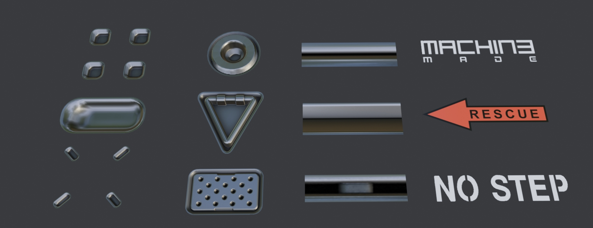

Decals
Decals in the context of DECALmachine, are mostly - but not necessarily - single-polygon-meshes with a specific Decal material applied. The material determines the type of a decal, of which there are currently 4:
- Simple - normal mapped + parallax, 1 material component
- Subset - normal mapped + parallax, 2 material components
- Panel - normal mapped, up to 3 material components
- Info - color mapped
 Simple, Subset, Panel and Info Decals, each 1 polygon
These so called mesh-decals are an alternative approach to detail texturing.
But unlike actual texturing, detailing using Decals, does not require any UVs being present and is extremely flexible, due to it being noncommittal, non-destructive and object based.
Note
This is not to be confused with mixing textures and materials via multiple uv channels on the same objects, for which term Decal is also sometimes used.
Libraries
Each individual Decal is stored in a folder containing a decal.blend file, a decal.png thumbnail and the Decal Textures.
Decal folders themselves are then stored in Decal Libraries. There is no limit to the number of Decal Libraries you can have, and there are ways to organized them in the addon preferences.
Decal Libraries are located in $assets/Decals where $assets is the chosen DECALmachine assets path.
DECALmachine supplies three Decal Libraries of its own to get you started.
Trim Sheet Librares - or Trim Decal Libraries - are similar, but they also provide an entire Texture Sheet and a data.json file in addition to the individual Trim Decals.
They are stored in $assets/Trims.
Both Library types can be shared with other DECALmachine users as folders or zipped.
Check out the Decal Resources, if you are looking for 3rd party Decal Libraries or Trim Sheet Libraries.
Importing Libraries is then also explained in the addon preferences.
Also, check out this Export Introduction, that explains how Decal Libraries, Atlases and Trim Sheets are related.
Clipping
If a Decal is too close to an object's surface, you may see flickering, or in Cycles even blackness.
 flickering in Eevee, blackness in Cycles
flickering in Eevee, blackness in Cycles
The solution is almost always to increase the Decal Height, which is done through a Displace modifier, that every Decal has.
Sometimes this issue is also caused by the 3d view's Clip Start value, if it's too low.
Parallax
Simple, Subset and Panel Decals take advantage of Parallax, which is a shader effect, that by utilizing an UV offset, creates the illusion of depth on flat geometry.

Keep in mind
How well parallax works depends on the angle you are looking at it from.
Also, parallax works better for some types of detail than others.
Going into the surface, works surprisingly well. Going above, not so much.
A single level of depth works better than multiple levels.
Finally, it also works better on square compared to elongated Decals.
Orthographic Views and Cameras
The parallax effect will not work properly in an orthographic viewport.
However, you can still render it perfectly, when using an orthographic camera.
Mirror
One huge advantage of mesh decals being objects - as opposed to just textures, or part of a texture - is that you can use modifiers on them.
The Mirror modifier especially comes to mind. Arrays can also be useful at times.
To setup the mirror modifier for decals, you need to tell it to mirror the UVs as well - in most cases that would be the Flip U option, in some rare ones it's Flip V, it depends on how the decal is layed out.
Without the UVs being mirrored, the parallax effect will be distorted and text will be reversed and unreadable.
In addition and with a Normal Transfer mod being present in the stack, make sure any mirror modifier is positioned before it. Normal Transfers should always be at the end.
A great way to mirror decals and do all the above automatically, is by using the Mirror(and Un-Mirror) tools in MACHIN3tools, as demonstrated below.
Trim Decals
Introduced in version 2 of DECALmachine, Trim Decals are in essence just like the regular Decals described above.
So a Trim Decal can be a Simple, Subset, Panel or Info decal, depending on its material.
The only real difference is that Trim Decals are created from and so associated with and stored alongside a specific Trim Sheet.
This enables them to be used with the Trim Cut tool, which does not work with regular Decals.
 Cutting a Trim Decal from the Example Sheet into a mesh
Cutting a Trim Decal from the Example Sheet into a mesh